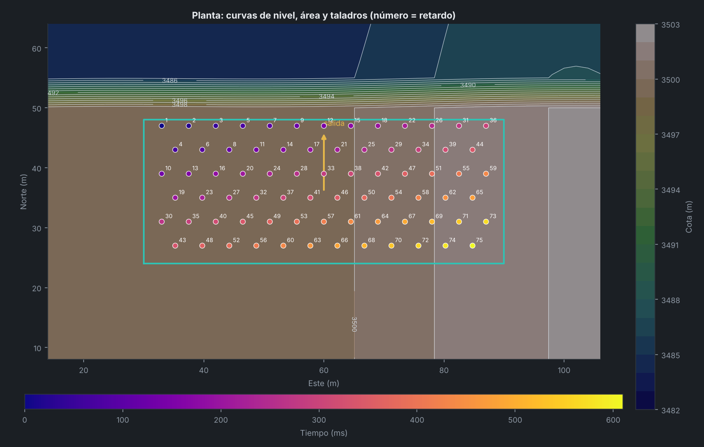
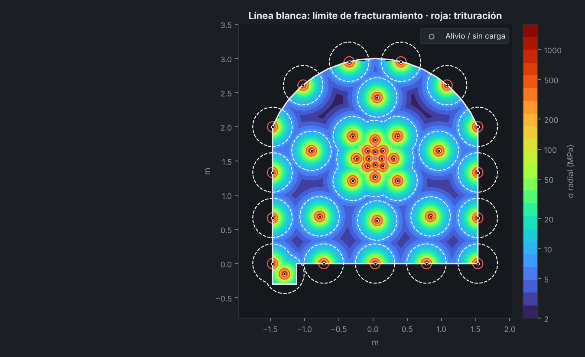
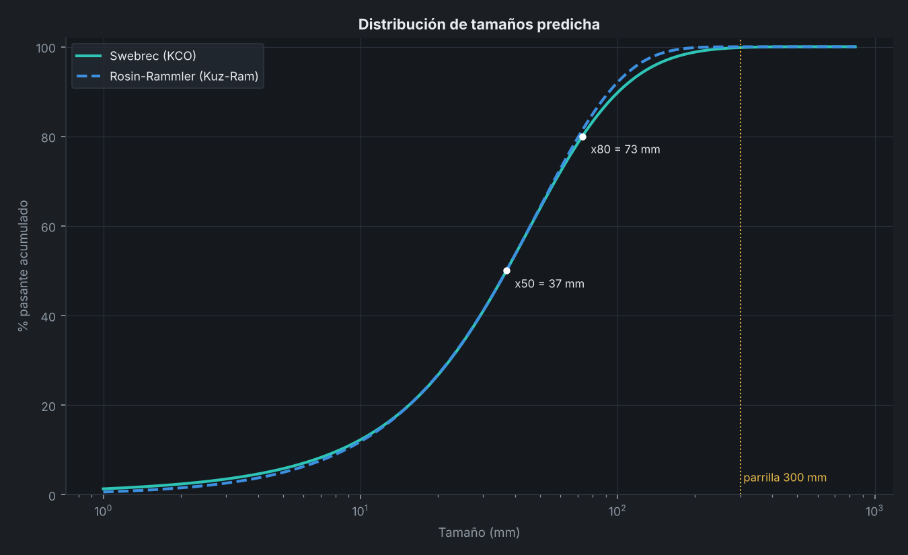
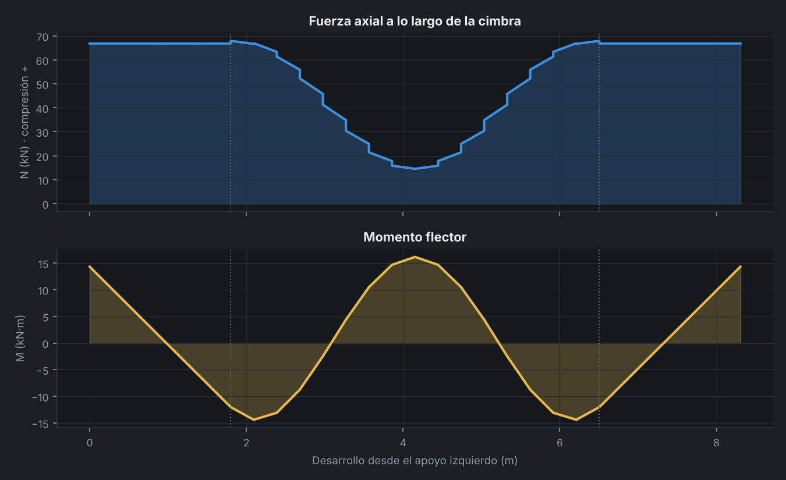

Diseña tu malla de voladura en minutos, de la sección al 3D.
LithoBlast3D genera mallas completas para frentes subterráneos y bancos de tajo abierto, las coloca sobre tus curvas de nivel del DWG, simula la perforación y la voladura en 3D y calcula fragmentación, daño, cimbras y costos.

Todo el ciclo en un solo programa
Es el mismo programa de escritorio, con el mismo menú: Archivo, Editar, Análisis, Ver, Topografía y CAD, Biblioteca de mallas, Visualizador 2D/3D, Simulación 3D y Reportes.
Malla automática por tipo de arranque
Ingresas la sección, la roca, los diámetros y la barra; eliges entre varias mallas completas:
- Arranques del estándar de 6 pies adaptados
- Corte de 4 secciones (Holmberg)
- 4 cuadrantes (Ash) · Quemado · Corte en V
- Cuneta, retardos y kg por taladro
Malla sobre la topografía
Importa el DWG/DXF con curvas de nivel, crea la superficie y diseña el banco: cada collar toma la cota del terreno y cada taladro llega a la cota de piso. Detecta la cara libre y arma la secuencia.
Exporta a AutoCAD
Guarda la malla en DWG o DXF con coordenadas reales y capas separadas: collares, taladros 3D, carga, números, retardos, cotas, área y leyenda.
Simulación 3D
Labor, malla, jumbo o perforadora manual, perforación, carguío en corte, secuencia de salida, fragmentación y comparación antes / después.
Análisis técnico
- Fragmentación Kuz-Ram + Swebrec y ajuste a datos
- Zona de daño (Kirsch)
- Comparador de burden (7 fórmulas)
- Macizo rocoso: RMR, Q, GSI, Hoek-Brown
- Cimbra metálica · Respuesta dinámica · Costos
Biblioteca, reportes y vibraciones
Biblioteca de mallas del estándar con planos, mapa de vibración (Holmberg–Persson), reportes HTML, importación y exportación CSV, deshacer en todo.
Resultados del programa
Gráficos generados por LithoBlast3D con su tema oscuro.



LithoBlast3D en el celular
Malla automática por tipo de arranque, malla de banco sobre un DXF con curvas de nivel, vista 3D, exportación DXF y las herramientas de análisis. Usa el mismo motor de cálculo, corre en el teléfono y funciona sin internet después de abrirla una vez. Ábrela y elige «Instalar app».
LithoBlast3D para Windows
Instalador para Windows 10/11 de 64 bits. No necesitas instalar Python.
Cuatro pasos
Descarga
Baja el instalador LithoBlast3D-…-instalador.exe.
Ejecuta
Si Windows muestra «Windows protegió su PC», pulsa Más información → Ejecutar de todas formas (el programa no tiene firma comercial).
Instala
Sigue el asistente en español. No pide permisos de administrador.
Para DWG
Instala también ODA File Converter (gratis). Sin él puedes usar DXF.
Requisitos del equipo
| Sistema | Windows 10 u 11 de 64 bits |
|---|---|
| Memoria | 8 GB de RAM recomendado (4 GB mínimo) |
| Gráficos | Tarjeta con OpenGL 3.2 o superior (la integrada de Intel/AMD sirve) |
| Espacio | Alrededor de 1 GB |
| DWG | ODA File Converter (opcional, gratuito) |